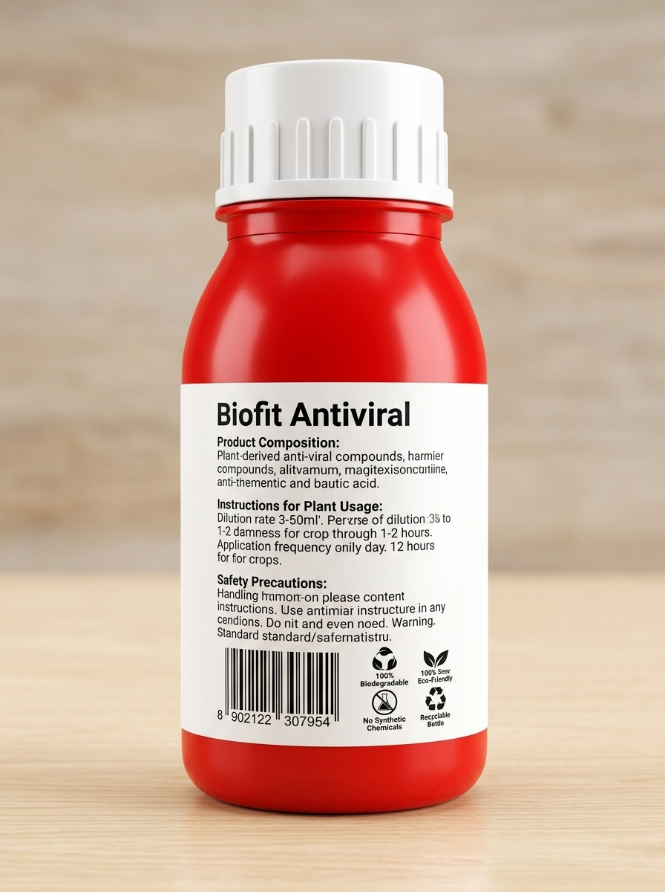
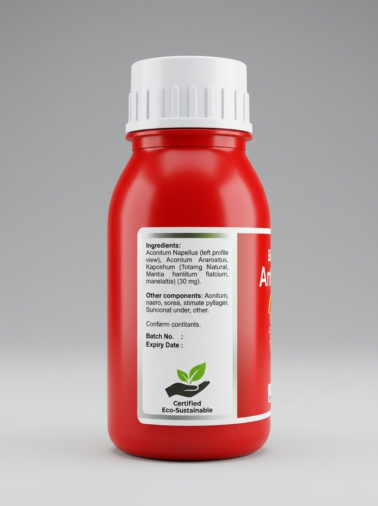
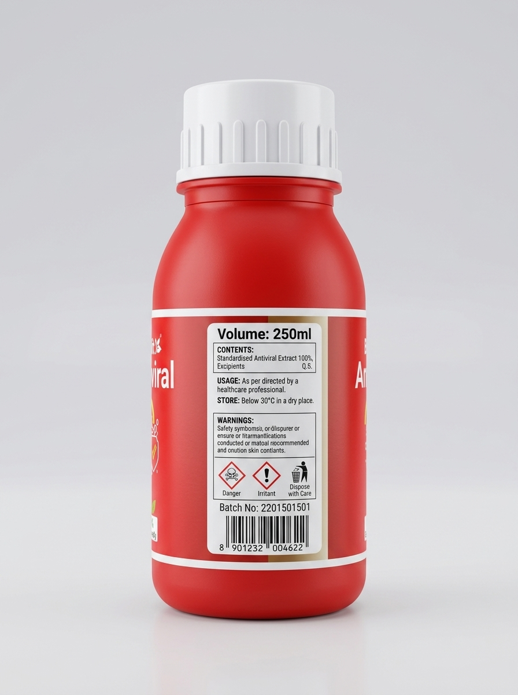

Complete 360° product visual views and interactive animated usage video
Main brand label & antiviral emblem

Composition & dosage instructions

Ingredients & eco certifications

Volume specs & safety symbols
45-degree angle studio presentation